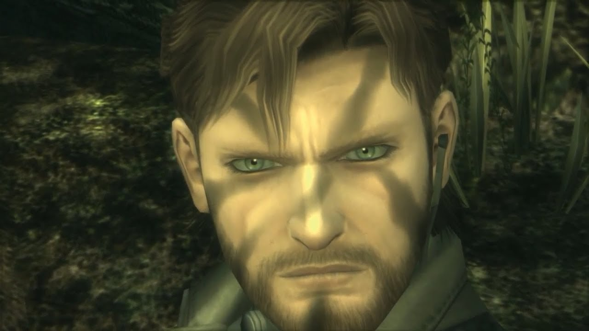
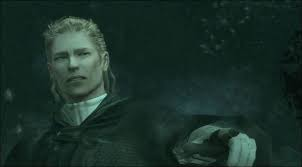
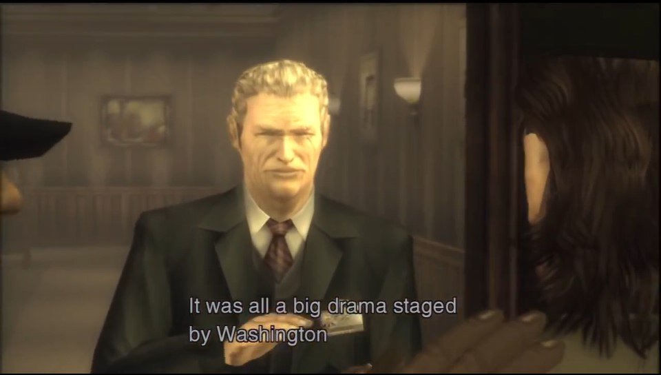
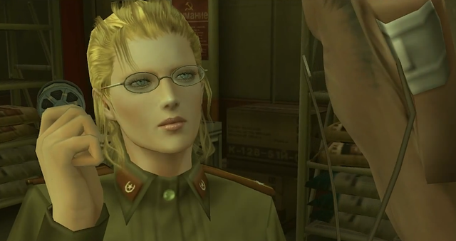
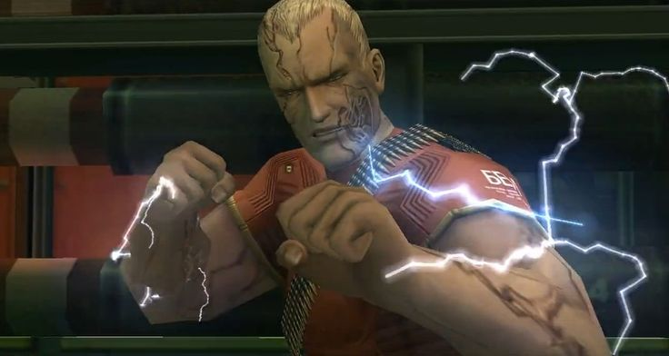
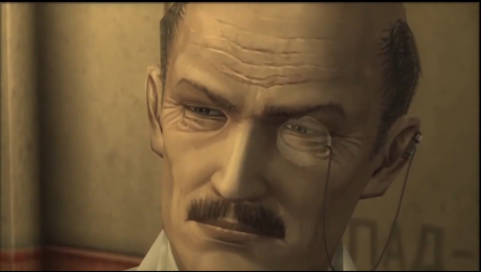

Personajes Principales
Naked Snake
Big Boss, de nombre real John, y también conocido como Jack, Naked Snake, Vic Boss, Saladino, o simplemente Snake, fue el nombrado mejor soldado del siglo XX, quien evitó varios conflictos nucleares, luchó contra las amenazas de Metal Gear y lideró ciertas fuerzas especiales como FOXHOUND, grupos militares independientes como Militaires Sans Frontières e incluso naciones completas como Outer Heaven o Zanzibar Land. Conocido como un héroe de guerra después del asesinato de la desertora The Boss, su mentora y única persona que amaba, fue concedido el título de Big Boss, el mejor soldado que Estados Unidos podía ofrecer. Más Información sobre Naked Snake.
The Boss
The Boss (1922-1964), anteriormente conocida como The Joy, y también conocida como Voyevoda, Madre de las Fuerzas Especiales, Lóbulo Izquierdo, y Mercury Lady fue la fundadora y líder de la Unidad Cobra, una heroína de la Segunda Guerra Mundial, cocreadora del CQC, la primera humana y mujer en el espacio, cofundadora de la Unidad FOX, y mentora y figura materna de Big Boss. Más Información sobre The Boss.
Major Zero
David Oh, de nombre en clave Major Zero, Cipher, o simplemente Zero fue el fundador y antiguo comandante de la unidad de las fuerzas especiales FOX. De origen británico, Zero es un veterano de la SAS que sirvió junto a The Boss. Él fue el creador de Los Patriots, ayudando a la "remasterización" de Los Filósofos.Más Información sobre Major Zero.
EVA/Tatyana
EVA (1936-2014), también conocida como Tatyana, y mucho más tarde como Big Mama, fue una espía china que operó durante la Guerra Fría. Conoció a Naked Snake haciéndose pasar por una agente de la KGB -siendo enviada por Los Filósofos- durante la Operación Snake Eater, en la cual cuyo objetivo fue recuperar el Legado de los Filósofos, y se enamoró de Snake. Alrededor de 1970 se convirtió en uno de los miembros fundadores de Cipher, y en 1972 dio a luz a Solid y Liquid Snake, y posteriormente a Solidus Snake.Más Información sobre EVA.
Coronel Volgin
Yevgeny Volgin Borisovitch (en ruso: Евгений Борисович Волгин) (19XX-1984), también conocido como Thunderbolt, fue un coronel del GRU stalinista, así como el comandante de operaciones estratégicas de la Unión Soviética, que intentó hacerse con el control de dicho país derrocando a Nikita Khrushchev y emplazando a Leonid Brezhnev y Alexei Kosygin en su lugar.Más Información sobre Volgin.
Sokolov
Nikolai Stephanovich Sokolov fue el diseñador original del Shagohod, un tanque nuclear equipado con la habilidad de disparar un misiles nucleares ICBM desde cualquier superficie del planeta. Antes del Shagohod, Sokolov trabajó en el área de los cohetes espaciales, ayudando a inventar el cohete A1 Vostok, que permitió a Yuri Gagarin entrar en órbita. Más adelante, Sokolov fue la cabeza de la OKB-754, más conocido como el Departamento de Diseño de Sokolov. Después de trabajar en el Shagohod, Sokolov comienza a tener miedo a su creación como una crisis de conciencia. A la luz de esto, Sokolov decide desertar hacia el Oeste, tarea que no sería fácil. Sin embargo, tiempo después, un operativo del Oeste (Gene) consiguió pasar a Sokolov al lado Oeste del Muro de Berlín. El hombre que organizó esto fue el Mayor Zero.Más Información sobre Sokolov.
Ocelot